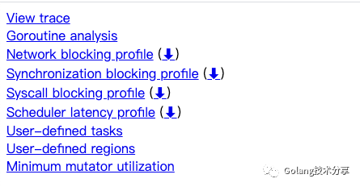
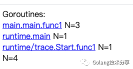
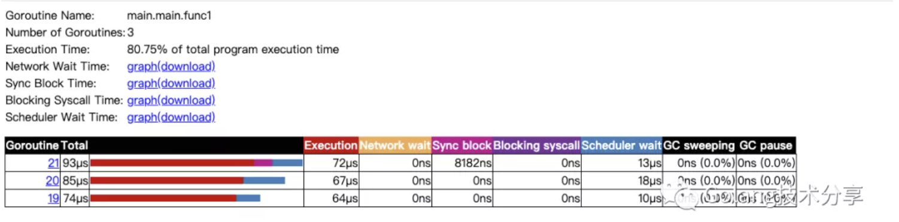
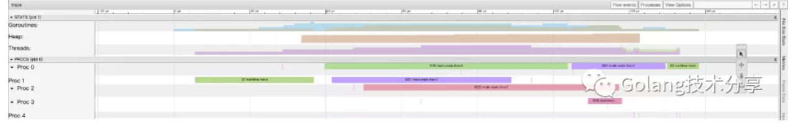
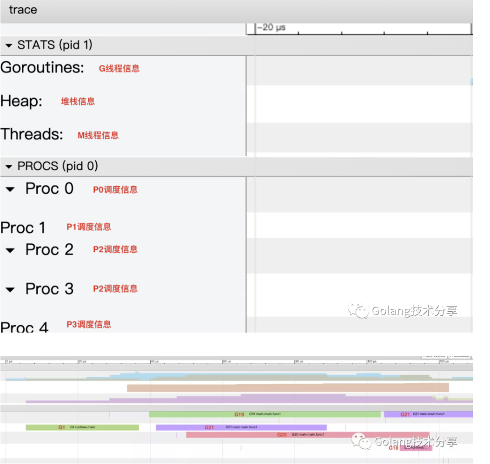
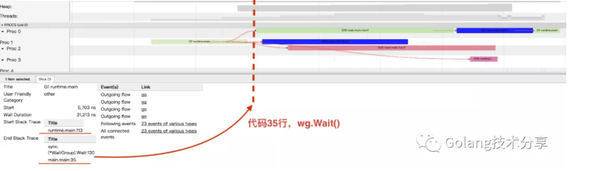
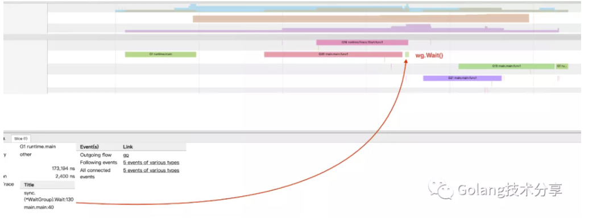

不要忽略goroutine的启动时间
项目中需要将数据推给多个服务器，大致如下
1 | package main |
请读者停来下思考一下，以上代码会得到什么样的输出。
1 | 1$ go run main.go |
这个结果，是不是和你想的一样呢。那么，问题出在了哪里？为什么从for循环中传递的url变得相同了，且为数组中的最后一项url。
原因分析
在Go中提供了非常好的程序分析工具，trace和pprof。trace侧重于分析goroutine的调度，pprof则侧重于程序的运行性能。为了更好地排查上述bug产生的原因，代码中新增了trace代码段。
1 | package main |
运行命令go run main.go ，将在同级目录生成trace.out文件。此时，执行go tool命令。
1 | 1go tool trace trace.out |
在web浏览器（推荐使用Chrome）打开http://127.0.0.1:61272

在这里，我们只关心两项指标。第一行View trace（可视化整个程序的调度流程）和第二行Groutine analysis。相信读者对trace和pprof的基本玩法都有了解，这里就不做过多介绍。后续小菜刀也会尽力出一些关于它们使用的详细文章。
进入Goroutine analysis项。

可以看到，程序一共有5个goroutine，分别是三个for循环里启动的匿名go func()、一个trace.Start.func1和runtime.main。
进入main.main.func1

这三个代表的就是for循环结构体里面启动的三个goroutine。这里，请记住它们的编号19、20、21。
此时，退回到http://127.0.0.1:61272页面，进入View trace项。


点击G1（G1代表的是runtime.main）所在的绿色方框，得到如下信息

上图是重点！我们可以看到G18、G19、G20、G21都是通过G1衍生出来的。同时可以看到，G1运行阻塞于第35行代码处，即wg.Wait()。
但是，通过上图中goroutine的运行时序，此时for循环中的3个goroutine均还未成功启动运行（虽然已经在主goroutine即main中通过go关键字进行了goroutine调用声明）。
那么，到这里读者应该清楚上文中bug产生的原因了吧。
1 | 1for _, url := range urls { |
原因
当主goroutine中的for循环逻辑已经走完并阻塞于wg.Wait（）一段时间后，go func的goroutine才启动准备（准备资源，挂载M线程等）完毕。那么，此时三个goroutine中获取的url都是指向的最后一次for循环的url，因此就造成了上文中的bug。
goroutine的启动时间是多少
通过在小菜刀电脑上的多次运行观察，一次goroutine的启动准备时间在数十微秒左右。当然该值在不同的操作系统和硬件设备上肯定会存在一些差异。为此，小菜刀在程序以下部分做了些小改动，以做测试
1 | 1for i, url := range urls { |
程序多次运行会产生不同的结果
1 | 1 $ go run main.go |
那么，我们就选取6000、7000、7000的结果来分析下当时goroutine的启动和调度情况。

如上，可以得知：由于在第二次for循环中让主goroutine睡了50微秒，使得首次被主goroutine调起的go func（上图表现为G20）已经得到了充足的时间来准备启动。但是首次调起的go func，其获取url的时间片是在第二次循环的睡眠阶段，因此它得到的url是”0.0.0.0:6000”，而其他两个go func（G21和G19）最终运行时获取的值还是”0.0.0.0:7000”的url。
之所以睡眠50微秒会造成不同的结果，是由于goroutine的启动时间并不固定，会存在一定范围的波动。
因此，解决上文的bug的方案应为如下
1 | 1for _, url := range urls { |
将每次遍历的url所指向值，通过函数入参，作为数据资源赋予给go func,这样不管goroutine启动会有多耗时，其url已经作为goroutine的私有数据保存，后续运行就用上了正确的url，那么，上文bug也相应解除。
后记
小菜刀在线上遇到该bug时，虽然已经知道通过url入参的方式进行修改，但当时没有过多思考，以为问题是出在了for…range的值拷贝上面。通过后续和同事的讨论与自己多次不同尝试之后，才意识到原来是goroutine的启动时间在捣鬼。
最后，希望读者们看完此文，不会再写出此bug。